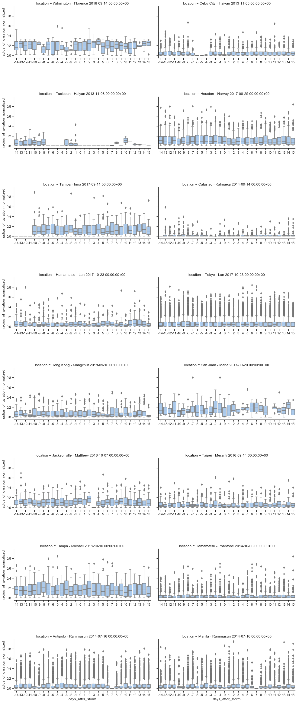
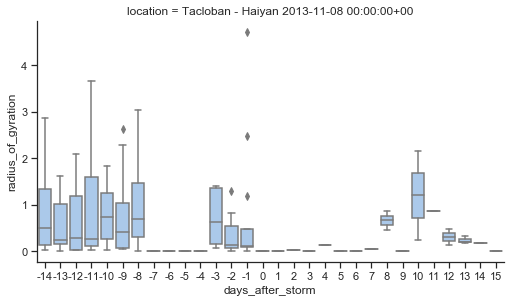
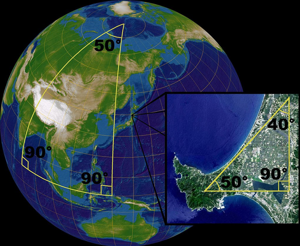
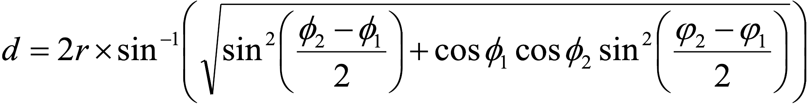

Radius of Gyration - Cities
Radius of Gyration in kilometers for individuals moving between their Twitter posts.
Zero indicates the day of storm impact.
* Normalized images have not yet been added for 3-day segments, nor 5+ locations.

A single pixel line on the 0 y-value indicates no movement data for the day for the selected number of stop minimum (2, 3 or 5 stops).
For some days there is no data due to data collection outages.
Radius of Gyration - Tacloban
Scale of y-axis changed from 40 to 4 km to show more detail for Tacloban, which has an 11 km radius.

Tacloban chart (2+ stops):
The current Seaborn graph process requires setting the radius to 0
which produces a line
regardless of whether there is any movement data for the day.
More Radius of Gryation Charts
Calculating Distance on the Earth's Spherical Surface
The angles of a triangle are more than 180° when applied to a sphere.

Radius of Gyration on a 2D surface:
Radius of Gyration on 3D surface:
Haversine Formula (Robusto 1957)

In PostgreSQL, the distance between two points on earth in kilometers can be calculated using ST_DistanceSphere:
displacement = ST_DistanceSphere(prior_geom, the_geom)/1000
ST_DistanceSphere is equivalent to the following implementation of the Haversine Formula (with less than 1 meter variance):
displacement_haversine = 2 * 6371 * asin(sqrt((sin(radians((latitude - prior_latitude) / 2))) ^ 2
+ cos(radians(prior_latitude)) * cos(radians(latitude)) * (sin(radians((longitude - prior_longitude) / 2))) ^ 2))
Extra Charts